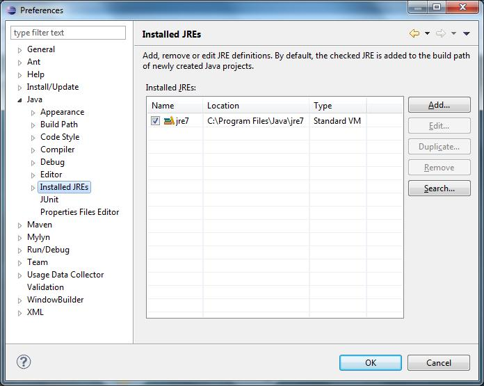
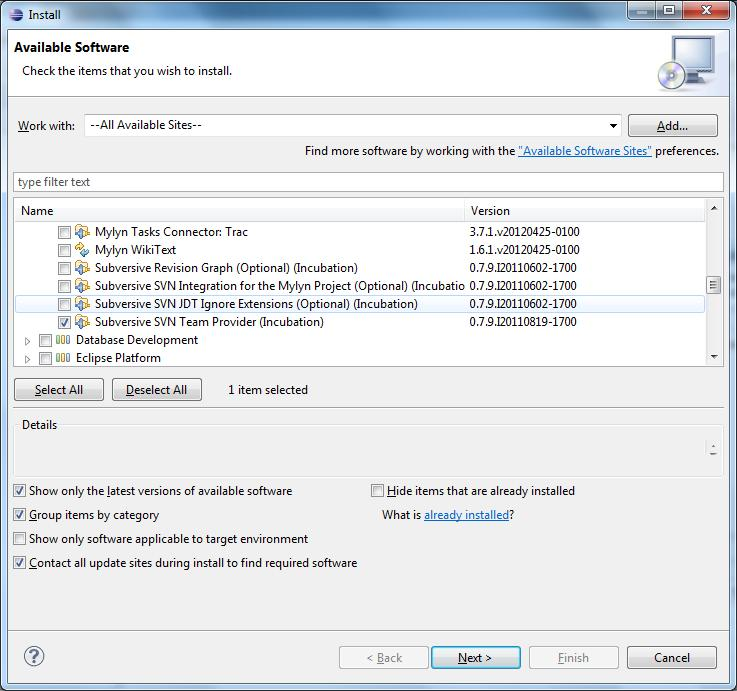
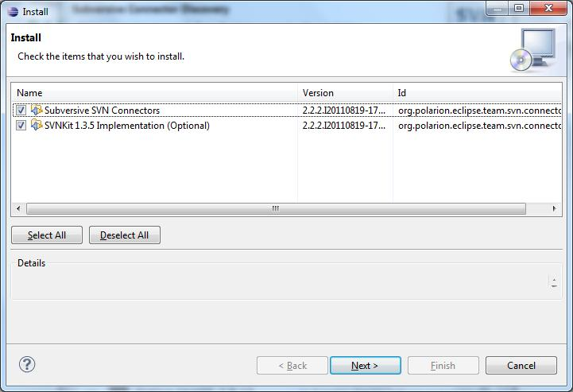
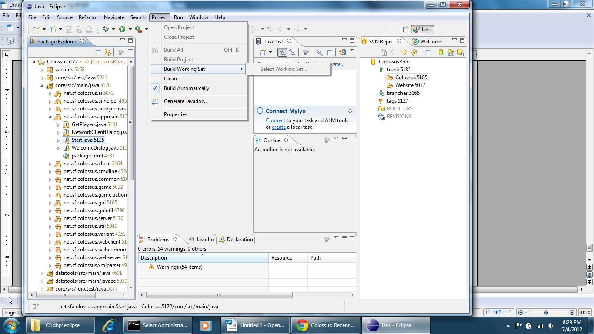

Building with Eclipse and Subversion
Download Eclipse. Eclipse for windows comes as a zip file and there is no installation software to run. Just unzip the zip file and accept the defaults. Because there is no installation software, nothing gets added to the windows menu. You will have to create your own shortcut on the desktop to the eclipse program. For example, your shortcut might have the target "C:\Program Files\eclipse\eclipse.exe" if that is where you unzipped Eclipse.
http://www.eclipse.org/downloads/packages/eclipse-ide-java-developers/indigor
Make sure you have Java SDK (version 1.5 or newer) installed and that Eclipse knows where it is. Colossus is set up for 1.5, so you will see some warnings if you use a newer version, but you can ignore them.
Java comes in many flavours. A runtime version (Java Runtime Edition, JRE) which allows you to run java programs. A Java Development Kit (JDK) which allows you to build java programs. The JDK comes in many variations that focus on providing different built-in functionality. JavaFX, NetBeans, JavaEE. Ignore everything except the Java Platform, Standard Edition JDK download.
Java recommends removing any old versions of Java. If you need old versions of Java then you can probably skip all these instructions as you are already a programming god. Otherwise, go to the java site: http://www.java.com/en/ select Free Java Download, select Remove Older Versions and follow the instructions. After you have wiped all the older versions then you are ready to get the JDK.
The JDK can be found at http://www.oracle.com/technetwork/java/javase/downloads/index-jsp-138363.html#javasejdk If the link doesn’t work, google Java, then search the Java site for JDK.
.
To check that Eclipse knows about your JDK go to Window ==> Preferences ==> Java ==> Installed JREs

Install Subversion. First go to Help ==> Install New Software and then select All Available Sites in the drop down menu. Click on the Collaboration box to expand it.
Scroll down under Collaboration and check Subversive SVN Team Provider (Incubation)

Click on Next.

And Next again. Accept the license and click on Finish. You will need to restart Eclipse after the installation finishes.
Now open Windows ==> Show View ==> Other ==> SVN ==> SVN Repositories and click OK

You will see a window asking you to install a Subersive Connector. Choose SVN Kit 1.3.5

Click Finish. An Install window will pop up.

Click Next twice, accept the license and click Finish. You may see a security warning about installing software with unsigned content. If so, click OK. Once again you need to restart Eclipse.
Set up SVN Repository for Colossus
Select Window ==> Show View ==> SVN Repositories. Eclipse will open a window with the title SVN Repositories. Right click inside this window, click on New and then Repository Location.

Enter the URL https://colossus.svn.sourceforge.net/svnroot/colossus . Enter your SourceForge user name and password. Check Save Authentication if you want and click on Finish.
Check out Colossus
In the SVN Repository window of Eclipse, select CollosusRoot ==> Trunk and select Colossus

Right click and choose Find Checkout As.
After some time the Check Out As window will open. You can choose Head Version to get the current version, or specify a specific revision to check out that revision.

Click Finish and Eclipse will check out the version for you. Eclipse will place the Colossus project in your default Workspace unless you tell it to do otherwise during checkout. By default Eclipse will set the project to build automatically.

You can take Collosus for a test spin by right clicking on Start.java (in core/src/main/java net.sf.collossus.appmain) and choosing either Run As then Java Application or Debug As and then Java Application.